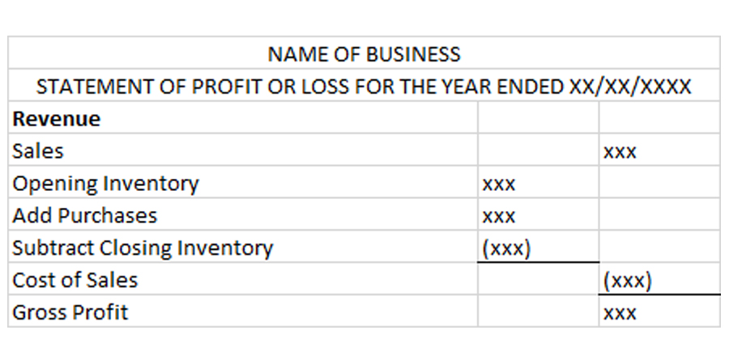

6.3 Gross Profit
The first part of the statement of profit or loss is for calculating the gross profit.
Gross profit is the profit a business makes after only removing the cost of the products it sold.
Gross profit = sales - cost of sales
Cost of sales (also known as cost of goods sold) is the cost of the products that were sold during the fiscal period.
The cost of sales is calculated by taking the cost of any products available at the start of the fiscal period (Opening Inventory), adding the purchases made during the fiscal period and subtracting the cost of any products that have not been sold by the end of the fiscal period (Closing Inventory).
Cost of sales = opening inventory + purchases - closing inventory
Inventory is just another word for products that the business buys to sell to its customers.
When Thomas starts his business, he has no opening inventory. He then purchases inventory amounting to K 2,500. By the end of January, he has sold all his inventory and so he has no closing inventory. Therefore, his cost of sales on 31 January 2020 is K 2,500.
Thomas's sales for the month of January are K 3,750.
Therefore, Thomas's gross profit is K 1,250.